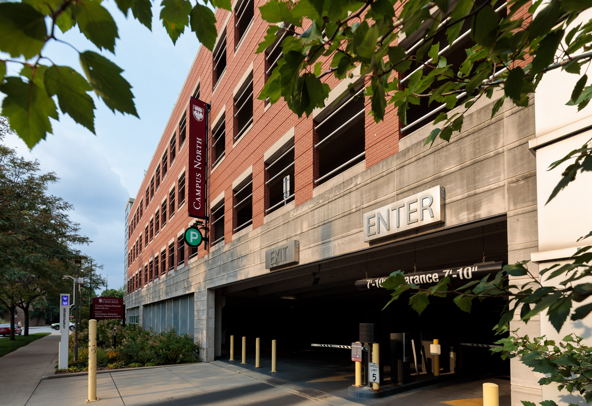
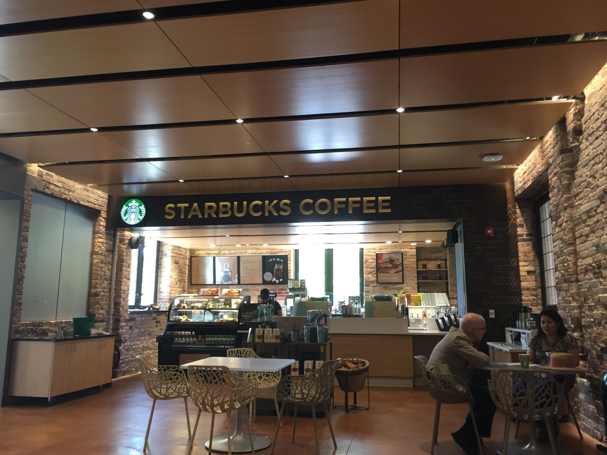

UChicago owns about 390 properties.
About 80 percent of them are tax-exempt, according to a Maroon analysis of Cook County’s property tax and parcel data.
Most of the University's tax-exempt properties are academic
buildings, but they also include hospitals.
In Illinois, hospitals qualify for tax exemption if the value of
certain services or activities, such as charity care or health
services to low-income and underserved individuals,
amounts to their estimated property tax liability.
For example, UChicago Medicine invested more than $715 million in
community benefits in fiscal 2024, including $567 million in
uncompensated care, according to its Community Benefit Report.
University properties, however, do not have such requirements. They are eligible for exemption if used exclusively for school purposes, and not used with a view to profit. In Illinois, this includes housing for students, their spouses and children, and staff.
Universities receive tax exemptions because they are providing
valuable services to the public, said Chris Berry, a professor
at UChicago’s Harris School of Public Policy.
“There's a rationale to it, which is that the city thinks the
thing that they're doing is providing value unto itself,”
Berry added. “I think in the case of certainly the University of
Chicago, there's a lot of benefits that it creates for the city.”
But understanding the extent of the University’s public benefits
is a challenging task.
“What are the benefits of providing these exemptions to colleges
and universities? I'm guessing that pretty often you end up in
an abstract place. You start talking about their value as job
creators, their value as supporting business activity in your
communities,” said Paula Worthington, a lecturer at Harris.
“The reason those are sort of harder-to-evaluate claims is that
if the University of Chicago was not in Hyde Park, doing whatever
it does, something else would be happening on those properties.
There'd be other jobs, they just wouldn't be jobs related to the
University. So what the net impact is is not always easy to
identify and articulate.”
Some academics and community members also point out that universities have significant, and often unchecked, influence on the economic and social landscape of their surrounding neighborhood.
“Few understand higher education’s national role in the devastating
history of demolition and displacement of stable communities
during the Urban Renewal period," author and urban historian
Davarian Baldwin wrote in his book In the Shadow of the Ivory Tower.
“When neighborhoods are targeted for campus expansion,
the people who live there face the enduring trauma of losing
their homes and the physical disruption of their cultural ties."
Additionally, as university activities become more intricately
linked to commercial interests, their tax-exempt status could
become a sharper point of contention.
“At some point, you are not just a university—you are also a
hedge fund. You are also mobilizing billions of dollars that
you are profiting off of,” said Wally Hilke, a professor at the
Northwestern Pritzker School of Law.
“When businesses or corporate interests are profiting,
it is fair for the public to ask, ‘how much do we need to be
subsidizing these private interests, and how much should we be
making sure that, like any other project primarily for private
benefit, the interests that are profiting should pay taxes back
to the public?’”
“No one is suggesting taxing classrooms or charity wards like luxury condos,” Shaw wrote in his op-ed. “But research labs, administrative towers, medical office buildings, parking garages and revenue-generating facilities are fair game for a serious reassessment.”
UChicago’s tax-exempt properties include some mixed-use units. Typically, universities pay taxes on properties used for commercial purposes and pay proportional taxes on mixed-use units. But exemption eligibility depends on the Department of Revenue and the courts’ interpretation of the state law.
On 55th St, Campus North Parking greets those entering campus.
But this building is not only a 4-level parking garage.

It also houses Roux, a restaurant, and Seven Ten Social, a bar with a bowling alley.
In an emailed response to the Maroon’s questions, a University
spokesperson wrote that “this building is primarily used for
parking and office space supporting the University’s
educational mission.”
The University is “assessing the background
of this building’s exemption to maintain compliance,”
the spokesperson wrote.
Pret A Manger in Reynolds, Starbucks in Saieh Hall, and Chicago
French Press in UChicago Bookstore are also examples of
commercial activities in buildings that are tax-exempt.

The threshold for "exemption" is a question of state law and has
been contested in the court by the University before.
In tax year 2015, UChicago and Bright Horizons, a child care
company, sought a property-tax exemption for two on-campus
daycares. This was rejected by the Department of Revenue in 2016.
In 2020, the state appellate court upheld the Department's decision, finding that the properties were "used with a view to profit," as Bright Horizons had earned about $940,000 in profits from their operation.
There's also the issue of unpaid property taxes.
UChicago Medicine in Orland Park, a suburb about 30 miles away from Hyde Park, owes the county about $1.1 million of unpaid tax bills including interest from tax year 2022 to 2024.
The University told the Maroon that the property is owned by the Village of Orland Park and leased by UChicago Medicine.
However, according to the Cook County Assessors Office, it is a leasehold property, meaning that the lessee is the responsible taxpayer.